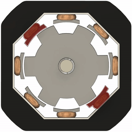
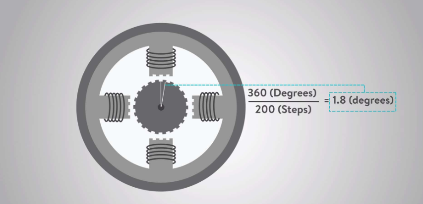
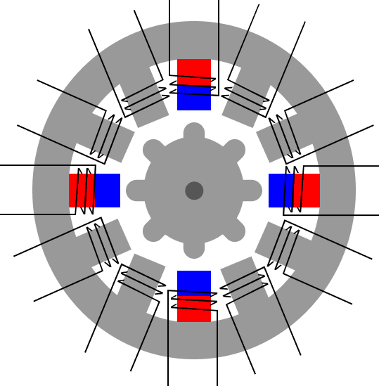
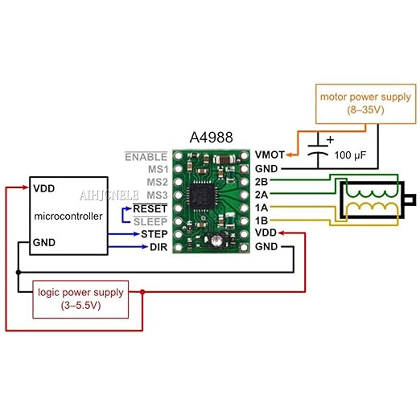
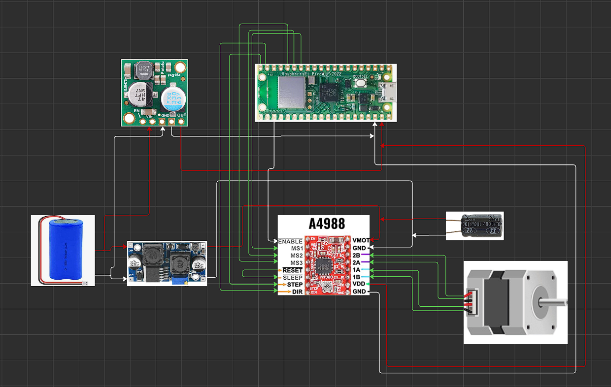

🎯 Learning Objectives
- Understand how stepper motors work and their role in robotics.
- Learn A4988 driver operation and its pin configuration.
- Explore different microstepping modes (full, half, quarter, eighth, sixteenth).
- Drive a NEMA 17 motor using Pico W in various stepping resolutions.
- Apply object-oriented programming (OOP) principles for motor control.
- Develop modular MicroPython code to manage hardware cleanly.
🧱 Hardware Used
- Raspberry Pi Pico W
- A4988 Stepper Motor Driver
- NEMA 17 Stepper Motor
- 7.4V Battery Pack
- DC-DC Booster (for 12V power source for stepper motor)
- 5V Logic Booster or Regulator (for VDD of A4988)
🔌 Step 1: Understand Stepper Motor and A4988
Stepper motors are brushless DC motors designed for precise control. Inside, multiple coils are arranged in phases. By energizing these coils in a specific sequence, the motor rotates in small, fixed increments called steps. This step-by-step movement allows for accurate positioning and repeatable motion, making stepper motors ideal for robotics, CNC machines, and 3D printers.

Stepper Motor Working Principle AnimationA stepper motor like the NEMA 17 moves in precise, fixed steps—typically 1.8° per step, giving 200 steps per revolution. This makes it ideal for robotics and CNC projects where accurate positioning is needed. Unlike regular DC motors, steppers rotate incrementally with each pulse, allowing for repeatable, controlled movement without extra sensors.

NEMA 17 Stepper Motor Example
Stepper Motor Step-by-Step Movement AnimationThe A4988 is a popular stepper motor driver used in robotics and 3D printers. It allows you to control the direction, speed, and microstepping of stepper motors with just a few signals from your microcontroller. The A4988 makes it easy to achieve smooth, precise motion and supports multiple microstepping modes for fine control.

A4988 Driver Pinout Diagram- Step angle (e.g., 1.8° per step for NEMA 17)
- Full step vs. microstepping
- A4988 inputs: STEP (triggered high for each microstep), DIR (rotation direction), MS1/MS2/MS3 (microstepping), ENABLE (optional)
| MS1 | MS2 | MS3 | Mode | Microsteps/step |
|---|---|---|---|---|
| 0 | 0 | 0 | Full Step | 1 |
| 1 | 0 | 0 | Half Step | 2 |
| 0 | 1 | 0 | Quarter Step | 4 |
| 1 | 1 | 0 | Eighth Step | 8 |
| 1 | 1 | 1 | Sixteenth Step | 16 |
🛠️ Step 2: Wiring the A4988 with Pico W
| A4988 Pin | Connects To |
|---|---|
| VDD | 5V Regulator Output |
| GND | GND |
| VMOT | 12V Motor Power (+) |
| GND (Power) | GND (Power Supply) |
| STEP | Pico GP15 |
| DIR | Pico GP14 |
| MS1 | Pico GP10 |
| MS2 | Pico GP11 |
| MS3 | Pico GP12 |
| Enable (optional) | GND or control pin |

A4988 and Pico W Wiring Diagram🧱 Step 3: Setting Up Stepping Modes (stepping_mode.py)
FULL_STEP = (0, 0, 0) HALF_STEP = (1, 0, 0) QUARTER_STEP = (0, 1, 0) EIGHTH_STEP = (1, 1, 0) SIXTEENTH_STEP = (1, 1, 1)
This file defines tuples for each microstepping mode supported by the A4988 driver. By organizing stepping modes this way, you can easily switch between full, half, quarter, eighth, and sixteenth steps in your code, making your motor control flexible and modular.
🧠 Step 4: Create a Stepper Motor Control Class (stepper_motor.py)
from machine import Pin
from time import sleep_us
import stepping_mode
class StepperMotor:
def __init__(self, step_pin, dir_pin, ms1_pin, ms2_pin, ms3_pin):
self.step_pin = Pin(step_pin, Pin.OUT)
self.dir_pin = Pin(dir_pin, Pin.OUT)
self.ms1 = Pin(ms1_pin, Pin.OUT)
self.ms2 = Pin(ms2_pin, Pin.OUT)
self.ms3 = Pin(ms3_pin, Pin.OUT)
def set_stepping_mode(self, mode):
self.ms1.value(mode[0])
self.ms2.value(mode[1])
self.ms3.value(mode[2])
def set_direction(self, clockwise=True):
self.dir_pin.value(1 if clockwise else 0)
def rotate_steps(self, steps, delay_us=1000):
for _ in range(steps):
self.step_pin.high()
sleep_us(delay_us)
self.step_pin.low()
sleep_us(delay_us)
def rotate_degrees(self, degrees, steps_per_rev=200):
microsteps = self.calculate_microsteps(steps_per_rev)
steps_needed = int((degrees / 360.0) * microsteps)
self.rotate_steps(steps_needed)
def calculate_microsteps(self, base_steps=200):
mode_state = (self.ms1.value(), self.ms2.value(), self.ms3.value())
microstep_table = {
(0, 0, 0): 1,
(1, 0, 0): 2,
(0, 1, 0): 4,
(1, 1, 0): 8,
(1, 1, 1): 16
}
return base_steps * microstep_table.get(mode_state, 1)
This class abstracts the control of a stepper motor. It lets you set the microstepping mode, direction, and rotate the motor by steps or degrees. The code is modular and reusable, making it easy to manage hardware and experiment with different settings. The rotate_degrees method automatically calculates the number of steps needed for a given angle, based on the current microstepping mode.
🧪 Step 5: Testing Stepper in All Modes (main.py)
from stepper_motor import StepperMotor
import stepping_mode
import time
motor = StepperMotor(step_pin=15, dir_pin=14, ms1_pin=10, ms2_pin=11, ms3_pin=12)
for mode_name, mode in [
("Full Step", stepping_mode.FULL_STEP),
("Half Step", stepping_mode.HALF_STEP),
("Quarter Step", stepping_mode.QUARTER_STEP),
("Eighth Step", stepping_mode.EIGHTH_STEP),
("Sixteenth Step", stepping_mode.SIXTEENTH_STEP)
]:
print(f"Testing {mode_name}")
motor.set_stepping_mode(mode)
motor.set_direction(clockwise=True)
motor.rotate_degrees(360)
time.sleep(1)
This script demonstrates how to test your stepper motor in all available microstepping modes. It loops through each mode, sets the driver accordingly, and rotates the motor a full 360 degrees. This helps you observe the difference in smoothness and precision for each mode, and verify that your wiring and code are working correctly.
🧑🔬 Step 6: Mini Challenges
- Mini Challenge 1: Modify the
rotate_degrees()to rotate back and forth 90° for each step mode. - Mini Challenge 2: Add a push-button to switch stepping modes dynamically.
- Mini Challenge 3: Experiment with different
sleep_us()values to understand speed control.
📌 Summary
- How stepping modes affect motor precision.
- Real motor wiring and current needs.
- Abstracting hardware into classes (OOP).
- Preparing foundational knowledge for PID motor control and balancing logic in future modules.